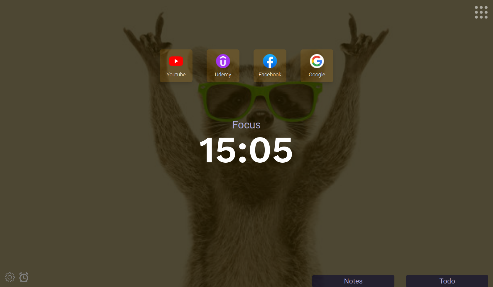

Uploading images to background

We can not store any of your images ourselves as the service is completely
free and storage such as a database would cost us money. Therefore we are
limited to using links to images you have stored elsewhere
Step 1
- Upload your image
-
Get your favourite image storage service (for example imgur)
- Upload your image on the platform
Step 2
- Get the link to that image
-
Now go to the link you were provided by that platform which displays
the image
-
Right click on the picture itself and press “Open image in new tab”
-
Open that new tab and copy the link in your searchbar
Step 3
- Use your image
-
Open your background setting in Spark Dashboard
-
Paste the url into your input and press “Add image”
-
Make sure that you have enabled choosing your own images
- Reload - You shold now see your image